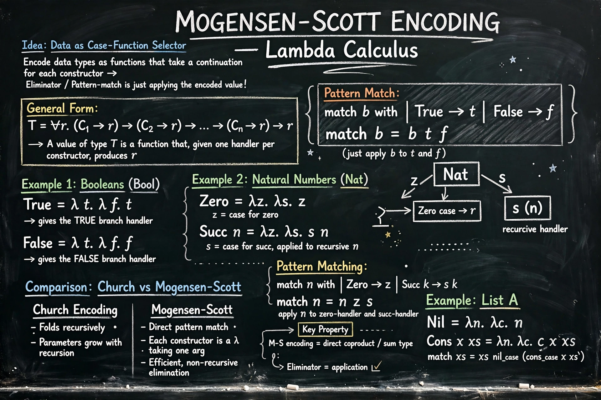

The Mogensen–Scott encoding is a method for representing data types in the lambda calculus, generalizing the Church encoding for natural numbers and other inductive types. It was developed by Danish computer scientist Torben Mogensen, building on work associated with Dana Scott.

| Mogensen–Scott encoding | |
|---|---|
| Field | Lambda calculus, type theory |
| Named after | Torben Mogensen, Dana Scott |
| Related | Church encoding, Scott encoding |
In Church encoding, a natural number n is represented as a higher-order function that applies its function argument n times. The Mogensen–Scott encoding extends this idea to arbitrary algebraic data types: a value is represented as a function that takes one argument for each constructor of the type and selects the appropriate branch, supplying the components of that constructor.
For a type with constructors C1 … Ck, the encoding has the form λc1…ck. … where the term for a particular constructor returns its handler applied to the (encoded) fields.
The Scott encoding represents a datatype similarly as a case-analysis function, but without encoding recursion directly. Mogensen's version modifies Scott's so that recursive occurrences are handled in a way closely related to Church encoding, making it easier to define recursive functions, though at some cost in efficiency because subterms may be recomputed.
The encoding is mainly of theoretical interest in the study of typed lambda calculi, System F, and the expressiveness of encodings. In System F, Mogensen–Scott encodings can give types to data representations that correspond to the expected inductive types.